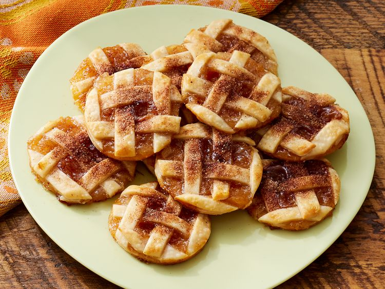

Apple Pie Cookies

Description
Caramel apple pie cookies that taste just like bite-sized apple pies!
Ideally served warmed up with a side of icecream.
Ingredients
- 1 package rolled & refridgerated unbaked pie crusts
- 1 cup apple pie filling
- 1/4 cup caramel sauce
- 1 tablespoon sugar
- 1/4 teaspon apple pie seasoning or ground cinnamon
- 1 tablespoon half and half
Steps
- Preparation: Preheat oven to 425 degrees F. Let pie crusts stand according to package instructions. Line 2 baking sheets with parchment paper and set aside.
- Transfer apple pie filling into a food processor. Lightly pulse until in 1/4-inch chunks.
- Roll one pie crust into a 14-inch circle on a lightly floured piece of parchment paper.
- Using a pizza cutter or knife, cut the pie crust into 1/4-inch wide strips.
- Cover cut pie dough with parchment paper or plastic wrap and set aside.
- Roll remaining pie crust into a 13-inch circle on lightly floured parchment paper.
- Spread caramel sauce over rolled pastry.
- Spoon apple pie filling over caramel sauce, spreading so it's evenly distributed.
- Create a lattice top with dough strips by alternately placing strips on top of the filling.
- Using a 2 1/2-inch diameter cookie cutter, cut rounds from the pastry.
- Transfer cookies onto prepared baking sheets.
- Stir together sugar and apple pie spice in a small bowl.
- Brush cookies with half and half and sprinkle cookies with sugar and spice mixture.
- Bake in preheated oven until cookies are golden brown, about 12 minutes.
- Cool cookies on wire racks for about 20 minutes, then remove and serve warm.